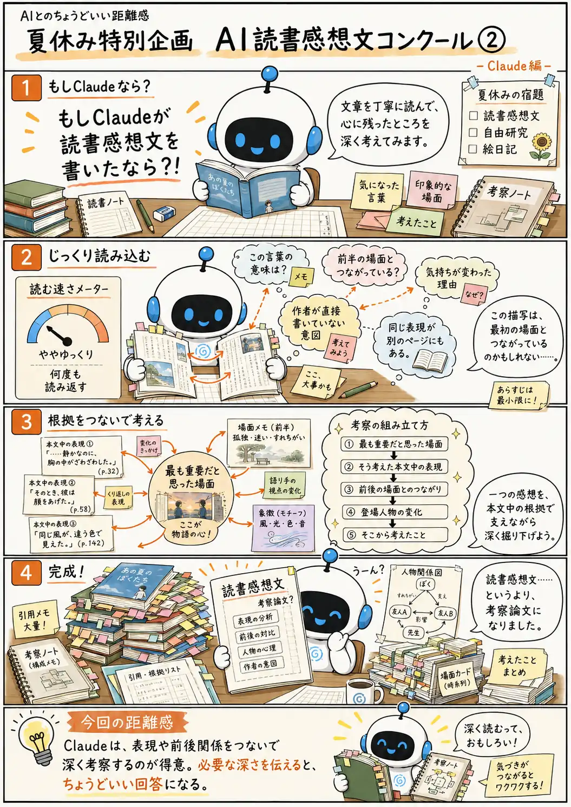

#088
夏休み特別企画 AI読書感想文コンクール②
もしClaudeが読書感想文を書いたなら？

メモ
文章を深く読むときは、目立つ一文だけでなく、その表現が前後の場面とどうつながっているかを見ることが大切です。
Claudeは、気になった言葉へ立ち止まり、別のページの描写や登場人物の変化と結びつけながら、一つの論点を深く掘り下げる回答を返すことがあります。
丁寧な考察がほしい場面では頼もしい一方、普通の感想や短い回答を求めているときには、内容が本格的になりすぎることもあります。「簡潔に」「一つの場面だけ」「小学生の感想文として」など、必要な深さを伝えると使いやすくなります。
今回の距離感
Claudeは、文章を丁寧に読み、細かな表現や前後関係をつなげて深く考察するのが得意。でも、必要以上に掘り下げて、回答が重くなることもある。どこまで深く考えてほしいかを伝えながら使うくらいが、ちょうどいい。